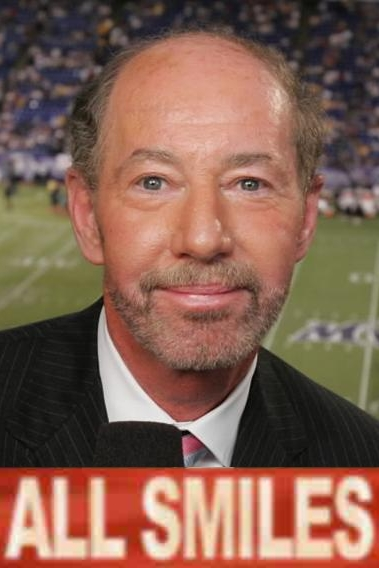

Believe it or not, despite what others may tell you, evryone seceretly loves being called Big Dawg. You may say "non-descriptive news man #687, are you sure thats true? Wont people find me as strange, or weird?" I am actually very sure, and i know for a fact they won't think that at all, and if they do it's because you don't have any self confidence as you are a shell of a man; please never question me EVER AGAIN.
Now that the nay-sayer has been *REDACTED*, lets get into the topic at hand. Everyone, whether they know it or not loves being called Big Dawg, it will fill the hole in their heart temporarily with nothing but unparelled confidence for at least the next 10 to 15 business minutes. This will make you appear as a phenomenial beacon of temporary joy, they will soon come to depend on you for their confidence. you may say " But isn't that a small psyop that you're pressing on your fellow person?" Well yes, but its okay, THEY LOVE IT. Soon they'll come to do it to, as it will become attached to every social based dopamine injection in their skull! The repeted phrase will reinforce it into every person verbal lexicon until it is no longer able to be avoided. You will become a social paragon of joy! With you at the helm you can now set any low-level social standard you'd like! They say its lonely at the top, but not for you Big Dawg, not for you.
